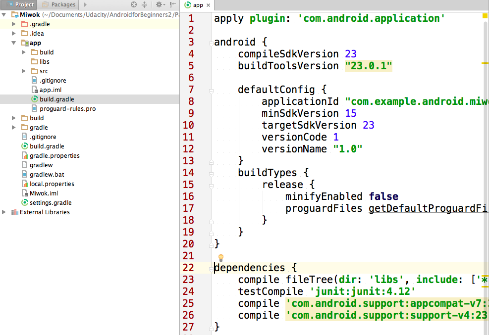
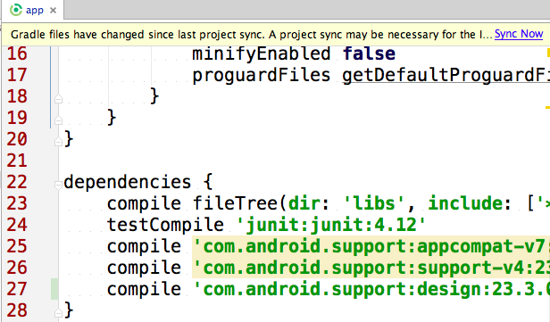
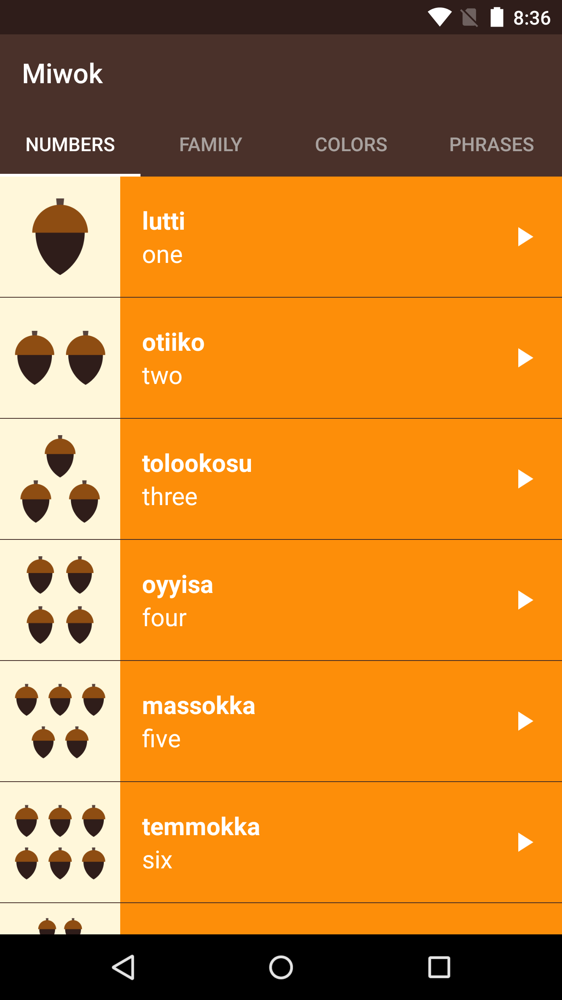
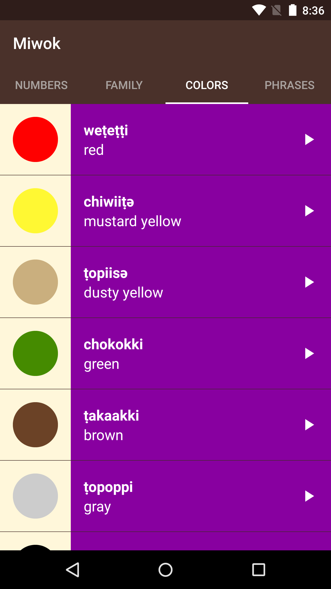
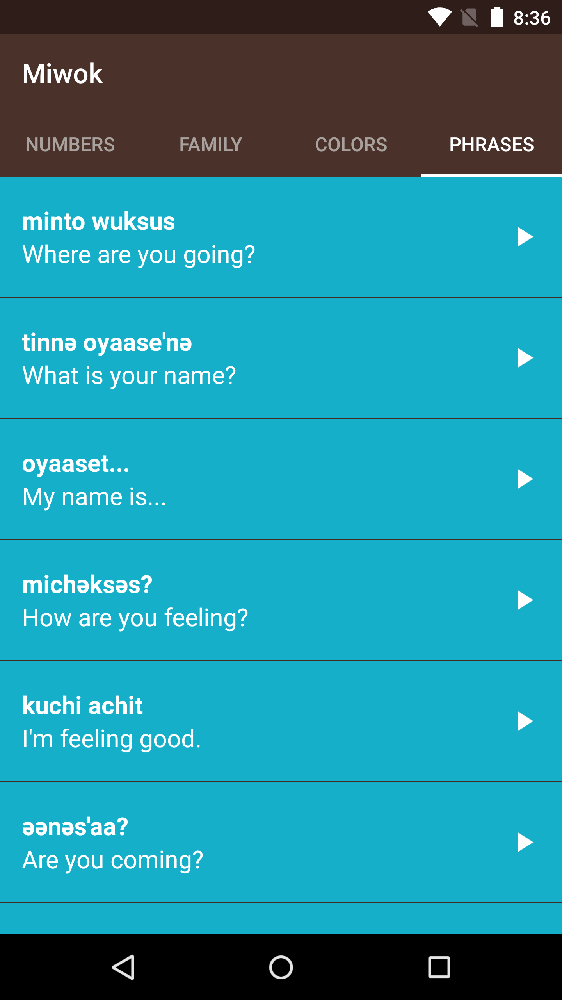
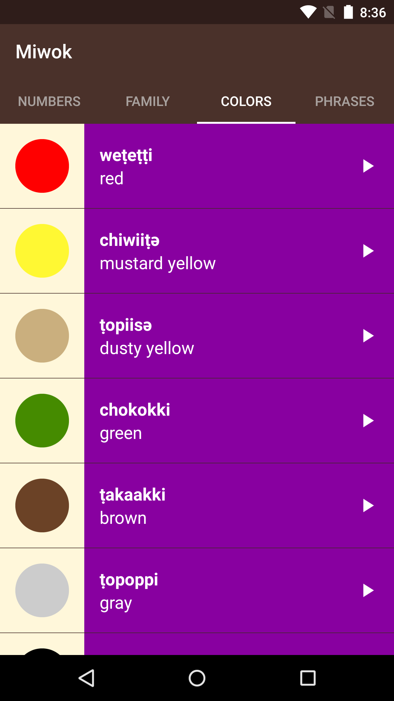
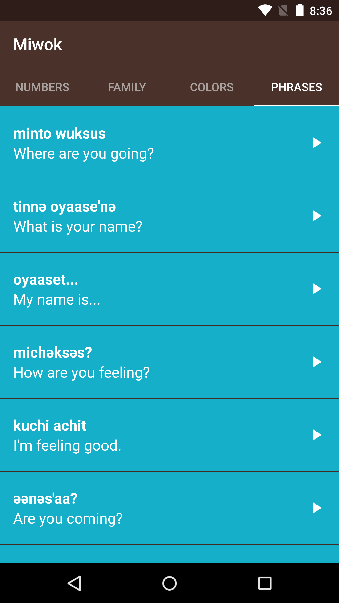

13. Add Tabs to ViewPager
Step 4: Add Tabs
Question:
Now let’s add tabs so the user can tell that there are more pages to swipe to.
First you’ll need to use the Android Design Support Library. This helps you create a Material Design app that runs even on older versions of Android. Learn more about the support library in this blogpost. There are periodic updates to the support library, so you can check this site for the latest updates or subscribe to the Android Developers blog.
Add Android Design Support Library to Your Project
1) In Android Studio, within the Project Directory pane, navigate to Miwok > app > build.gradle and open the build.gradle file.
Gradle is the tool that Android Studio uses to generate the apk (app file) that goes onto the device. For more info on configuring the build.gradle file, see this article. There’s also an advanced Udacity course on this topic, so don’t worry if you don’t understand it now.

2) This build.gradle file contains information about how your app should be packaged. Go to the dependencies section, and add a line that includes the Android Support Design Library. This indicates that our app depends on the Android Design Library, and that our Miwok app code can now refer to components within the design library.
compile 'com.android.support:design:23.3.0'
Afterwards, it should look similar to this:
dependencies {
compile fileTree(dir: 'libs', include: ['*.jar'])
testCompile 'junit:junit:4.12'
compile 'com.android.support:appcompat-v7:23.2.1'
compile 'com.android.support:support-v4:23.2.1'
compile 'com.android.support:design:23.3.0'
}3) You will see a yellow warning at the top of your file saying that the Gradle file has changed and a project sync is needed. Click the “Sync Now” button.

Now you can start using components from the Android Design Support Library, such as the TabLayout for the Viewpager!
In this next coding task, modify the app to add tabs to your ViewPager in the MainActivity. This is what the app should look like when you’re done. You can consult this Codepath tutorial for help.
   
 
Start Quiz:
Solution:
These are the changes needed to complete the quiz.
This is the state of the code after completing the quiz.
First, we’ll get the tabs showing up on screen. Then we’ll worry about the visual polish to match the redlines afterwards.
1) Since the Design Library should be linked as a dependency in the project already, modify MainActivity layout to contain a ViewPager and TabLayout. The activity_main.xml layout file should look like this. Notice that the TabLayout has a view ID assigned to it because we’ll need to refer to the view in the Java code.
The xml file might look like this:
<?xml version="1.0" encoding="utf-8"?>
<LinearLayout xmlns:android="http://schemas.android.com/apk/res/android"
xmlns:tools="http://schemas.android.com/tools"
android:layout_width="match_parent"
android:layout_height="match_parent"
android:background="@color/tan_background"
android:orientation="vertical"
tools:context="com.example.android.miwok.MainActivity">
<android.support.design.widget.TabLayout
android:id="@+id/tabs"
android:layout_width="match_parent"
android:layout_height="wrap_content" />
<android.support.v4.view.ViewPager
android:id="@+id/viewpager"
android:layout_width="match_parent"
android:layout_height="match_parent"/>
</LinearLayout>2) Modify the MainActivity onCreate() method to connect the TabLayout with the ViewPager.
Your code should look like this:
package com.example.android.miwok;
import android.os.Bundle;
import android.support.design.widget.TabLayout;
import android.support.v4.view.ViewPager;
import android.support.v7.app.AppCompatActivity;
public class MainActivity extends AppCompatActivity {
@Override
protected void onCreate(Bundle savedInstanceState) {
super.onCreate(savedInstanceState);
// Set the content of the activity to use the activity_main.xml layout file
setContentView(R.layout.activity_main);
// Find the view pager that will allow the user to swipe between fragments
ViewPager viewPager = (ViewPager) findViewById(R.id.viewpager);
// Create an adapter that knows which fragment should be shown on each page
CategoryAdapter adapter = new CategoryAdapter(getSupportFragmentManager());
// Set the adapter onto the view pager
viewPager.setAdapter(adapter);
// Find the tab layout that shows the tabs
TabLayout tabLayout = (TabLayout) findViewById(R.id.tabs);
// Connect the tab layout with the view pager. This will
// 1. Update the tab layout when the view pager is swiped
// 2. Update the view pager when a tab is selected
// 3. Set the tab layout's tab names with the view pager's adapter's titles
// by calling onPageTitle()
tabLayout.setupWithViewPager(viewPager);
}
}3) Now we have to tell the app what text to display in each tab. Go into the CategoryAdapter.java file and override the getPageTitle() method of the class. This method was originally defined in the superclass (the FragmentPagerAdapter), but we want to override the method to customize the tab text (which is known as the page title in the code).
To override the method, use the keyboard shortcut Ctl + O. Type in “getPageTitle” and hit OK.
Android Studio will automatically add this method into the CategoryAdapter class.
@Override
public CharSequence getPageTitle(int position) {
return super.getPageTitle(position);
}4) Modify the default CategoryAdapter getPageTitle(int position) implementation to return the proper category name per page. We could return a hardcoded string such as “Numbers,” “Family,” and so on. However, as emphasized at the end of Lesson 4, we don’t want to restrict our app to only support the English language. Instead, we should use the string resource for those category names.
Unfortunately, that also means we need a Context object in order to turn the string resource ID into an actual String. So we modify the CategoryAdapter constructor to also require a Context input so that we can get the proper text string.
This is what the CategoryAdapter class looks like with the proper getPageTitle(int position) code, where we rely on string resources instead of hardcoded strings in the Java code.
package com.example.android.miwok;
import android.content.Context;
import android.support.v4.app.Fragment;
import android.support.v4.app.FragmentManager;
import android.support.v4.app.FragmentPagerAdapter;
/**
* {@link CategoryAdapter} is a {@link FragmentPagerAdapter} that can provide the layout for
* each list item based on a data source which is a list of {@link Word} objects.
*/
public class CategoryAdapter extends FragmentPagerAdapter {
/** Context of the app */
private Context mContext;
/**
* Create a new {@link CategoryAdapter} object.
*
* @param context is the context of the app
* @param fm is the fragment manager that will keep each fragment's state in the adapter
* across swipes.
*/
public CategoryAdapter(Context context, FragmentManager fm) {
super(fm);
mContext = context;
}
/**
* Return the {@link Fragment} that should be displayed for the given page number.
*/
@Override
public Fragment getItem(int position) {
if (position == 0) {
return new NumbersFragment();
} else if (position == 1) {
return new FamilyFragment();
} else if (position == 2) {
return new ColorsFragment();
} else {
return new PhrasesFragment();
}
}
/**
* Return the total number of pages.
*/
@Override
public int getCount() {
return 4;
}
@Override
public CharSequence getPageTitle(int position) {
if (position == 0) {
return mContext.getString(R.string.category_numbers);
} else if (position == 1) {
return mContext.getString(R.string.category_family);
} else if (position == 2) {
return mContext.getString(R.string.category_colors);
} else {
return mContext.getString(R.string.category_phrases);
}
}
}5) Since we modified the CategoryAdapter constructor, we also need to update the MainActivity (which uses that constructor). When we create a CategoryAdapter, we pass in a Context (which is “this” or the activity) and the FragmentManager.
That declaration line might look like this:
CategoryAdapter adapter = new CategoryAdapter(this, getSupportFragmentManager());6) If you run the app now, the tabs should successfully be displayed on the screen! However, it doesn’t look that great with the current color scheme of the rest of the app. Let’s move onto the visual polish stage, using the redlines from the designer to guide us.
7) The first thing we notice is that the “Family Members” text is too long, compared to the other tab labels. In the strings.xml file, we can change the string to Family instead of Family Members.
When you modify strings, be careful of all the places that use that string. In this case, we only use the string in one place, so it’s safe to change.
<!-- Category name for the vocabulary words for family members [CHAR LIMIT=20] -->
<string name="category_family">Family</string>8) Make visual tweaks to the app by following the Codepath tutorial we linked for you.
Modify the activity_main.xml file. Change the background of the root LinearLayout as well, so that the tabs are the same color as the app bar. We also want to apply a style to the tabs, to change the visual appearance of them.
<?xml version="1.0" encoding="utf-8"?>
<LinearLayout xmlns:android="http://schemas.android.com/apk/res/android"
xmlns:tools="http://schemas.android.com/tools"
android:layout_width="match_parent"
android:layout_height="match_parent"
android:background="@color/primary_color"
android:orientation="vertical"
tools:context="com.example.android.miwok.MainActivity">
<android.support.design.widget.TabLayout
android:id="@+id/tabs"
style="@style/CategoryTab"
android:layout_width="match_parent"
android:layout_height="wrap_content" />
<android.support.v4.view.ViewPager
android:id="@+id/viewpager"
android:layout_width="match_parent"
android:layout_height="match_parent"/>
</LinearLayout>Define the theme of the tab layout in your styles.xml file. Note that there should be no shadow below the app bar. See this StackOverflow discussion thread.
When you’re done, the styles.xml file should look like this:
<resources>
<!-- Base application theme. -->
<style name="AppTheme" parent="Theme.AppCompat.Light.DarkActionBar">
<item name="colorPrimary">@color/primary_color</item>
<item name="colorPrimaryDark">@color/primary_dark_color</item>
<item name="actionBarStyle">@style/MiwokAppBarStyle</item>
<item name="android:windowContentOverlay">@null</item>
</style>
<!-- App bar style -->
<style name="MiwokAppBarStyle" parent="style/Widget.AppCompat.Light.ActionBar.Solid.Inverse">
<!-- Remove the shadow below the app bar -->
<item name="elevation">0dp</item>
</style>
<!-- Style for a tab that displays a category name -->
<style name="CategoryTab" parent="Widget.Design.TabLayout">
<item name="tabIndicatorColor">@android:color/white</item>
<item name="tabSelectedTextColor">@android:color/white</item>
<item name="tabTextAppearance">@style/CategoryTabTextAppearance</item>
</style>
<!-- Text appearance style for a category tab -->
<style name="CategoryTabTextAppearance" parent="TextAppearance.Design.Tab">
<item name="android:textColor">#A8A19E</item>
</style>
</resources>9) After all those code changes (you guessed it), we should run the app to make sure it looks and works as we expect. :)
If you want to double-check your code against ours, this is the code diff for what changed in this quiz. This is the full ending state of the app. (Hard to believe it’s the end, I know!)
In the future, if you want to learn more, check out the open-source Cheesesquare app by Developer Programs Engineer Chris Banes. Download the code, import it into Android Studio, and run the Cheesesquare app on your device to check out more cool things you can do with the Android Design Support Library.